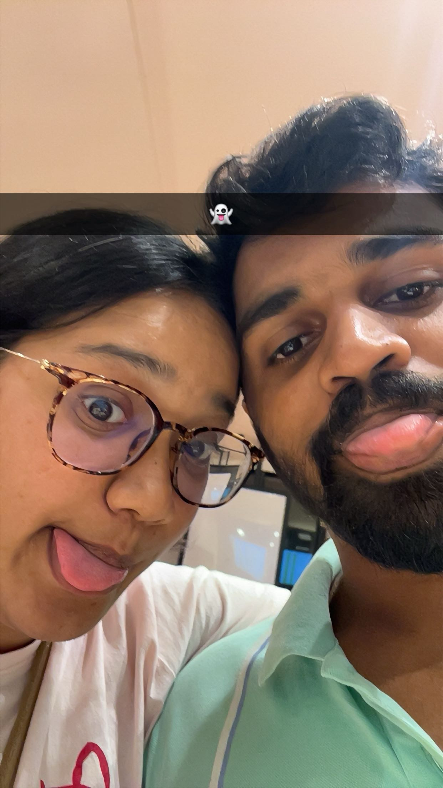
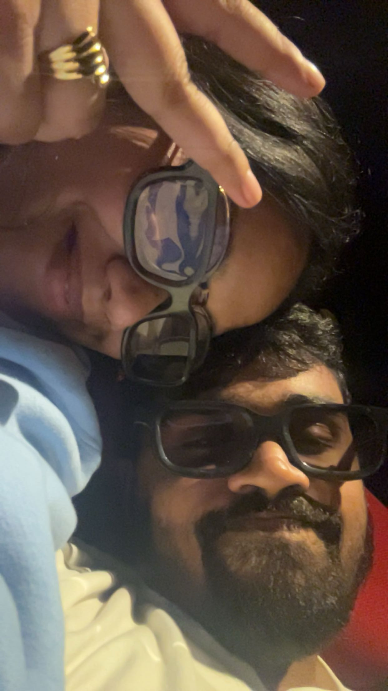

I just want you in all of mine. ❤️”
When We Were Just Us
I think one of my favourite things about us is how differently we can look at a camera. 😂❤️
You: “Wait, let me take a nice picture.” 📸
Me: “Let me ruin it.” 😂
You love clicking pictures. I love giving you the weirdest poses possible.
And somehow, we still end up with pictures that I absolutely love.
But honestly, it's not really about the pictures. It's about all those tiny moments behind them.
You pulling me closer. Me making some stupid face. You laughing at me. Us taking one more photo even though we already have fifty. 😂
These are the moments I want to remember. Not just the perfect pictures — the real ones.
The silly ones. The messy ones. The ones where we're not trying to look perfect. Just you and me being ourselves.
Kashu, I hope we keep taking ridiculous pictures together for the rest of our lives. ❤️
Even when we're old.
Although I'm warning you now — I'm still going to make the weirdest face in every photo. 😂
— Ayush ❤️